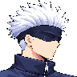
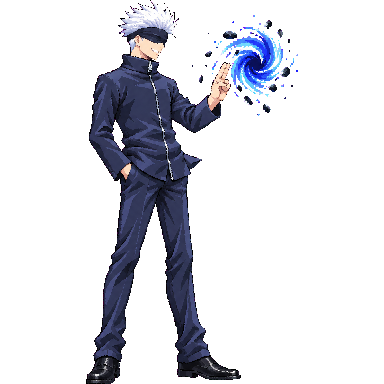

Diagnostic only. This atlas was packed with a separate warning-mode QA manifest so every candidate can be inspected. The production strict scale gate still fails on 10 animations, and no new Gojo animation or UI has final visual approval. This page is separate from the game's shipped Gojo atlas.
Strict-gate holds: heavy, airLight3, airHeavy, launched, spin, airRecover, down, getup, vanish, ko. Additional motion or anatomy holds include run, light4 and special. Down and KO preserve their original prone poses for Claude's grounding review.
The floor guide is drawn at the 256-cell pivot, y=240. Frame timing comes from the packed animation JSON. Animation data · Diagnostic sheet · Sprite Lab
These images are included for final set review, not game integration.